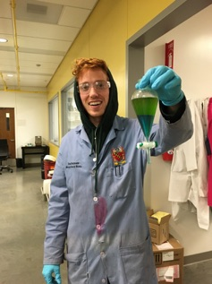

Logan Bachman
Biography: I attended UT Austin for my undergraduate degree where I worked for Eric Anslyn doing small molecule synthesis of kinase inhibitors. After graduating, I officially joined the Anslyn group in 2014 where I work on the synthesis of fluorophores and fluorescent peptides that are used toward single-molecule peptide sequencing, in collaboration with Edward Marcotte.

CONTACT: lbach@utexas.edu
DEGREES:
BS Chemistry, University of Texas at Austin 2014
ANSLYN GROUP PUBLICATIONS:
1. Edupuganti R., Wang Q., Tavares C. D., Chitjian, C. A., Bachman J. L., Ren P., Anslyn E. V., Dalby, K. N. Bioorg. Med. Chem., 2014, 1;22(17):4910-6.
2. Diehl,K.; Kolesnichenko, I.; Robotham, S.; Bachman, J. Zhong, Y.; Brodbelt, J.; Anslyn, E. Nature Chem. 2016, 8, 968-973.
OTHER PUBLICATIONS: